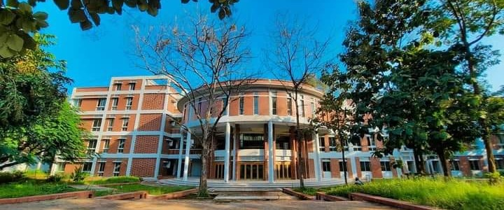

Chittagong University of Engineering & Technology (CUET) is one of the leading Public University of Bangladesh. It is situated alongside the Chittagong Capital road 25km away from the city of Chittagong, the main sea port and the second largest city of Bangladesh. The University is taking shape in about 171 acres land of magnificent natural settings comprising pristine hills, plane lands and takes with numerous specks of plants. It is playing a pioneering role for higher education, research and development in the field of engineering and applied sciences since its inception as engineering college, Chittagong in year 1986. Its graduates are among the leaders in their respective fields.